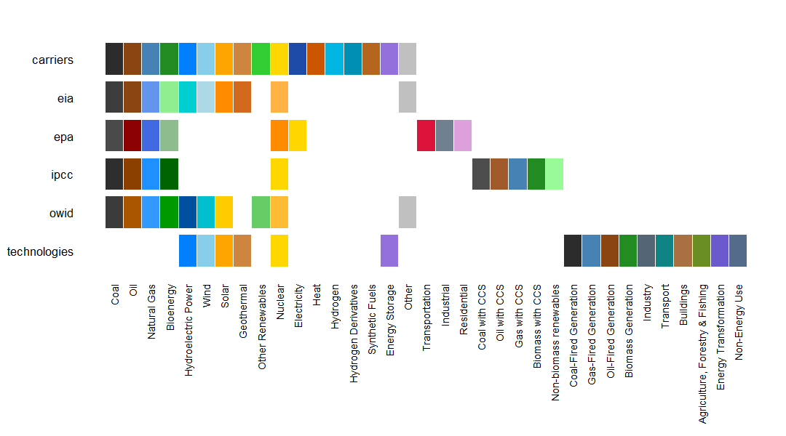
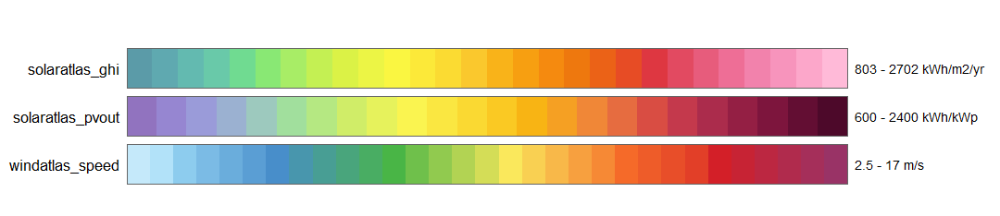
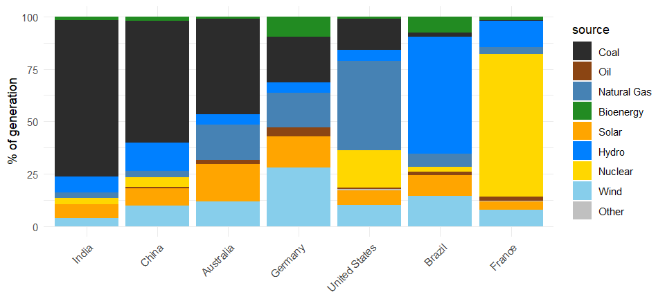
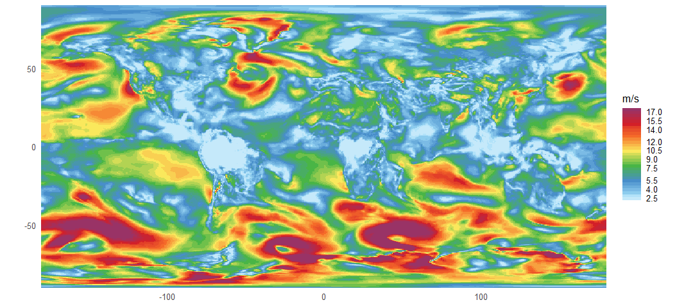
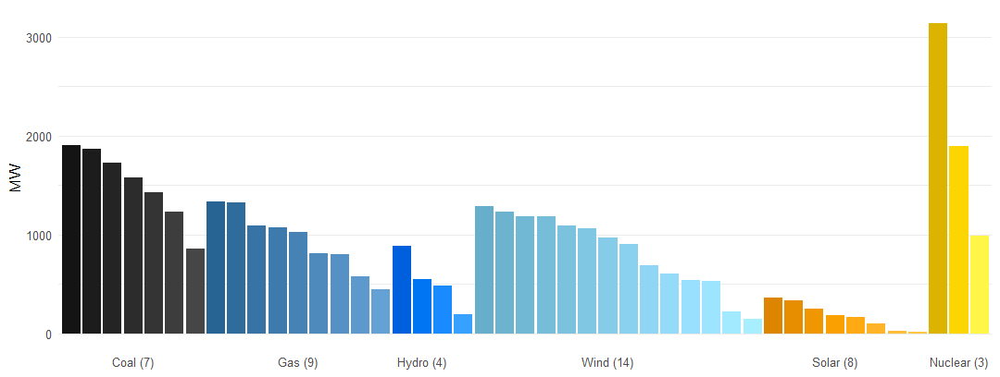

Colour palettes for energy data, following the conventions of published reports, with a matcher that copes with the labels real datasets actually use.
Palettes are data, not code: plain YAML files carrying their colours, display labels, aliases, orderings and provenance. Adding one is a file, not a change to the R source.
Installation
# install.packages("pak")
pak::pak("optimal2050/energypal")The palettes
Nine ship, in two kinds.
info <- energypal_info()
info |> select(name, title, type, n, unit)
#> name title type
#> 1 carriers Energy carriers discrete
#> 2 eia EIA Annual Energy Outlook (approximation) discrete
#> 3 epa EPA greenhouse gas inventory (approximation) discrete
#> 4 ipcc IPCC AR6 WGIII energy supply (approximation) discrete
#> 5 owid Our World in Data energy mix (approximation) discrete
#> 6 solaratlas_ghi Global Solar Atlas GHI continuous
#> 7 solaratlas_pvout Global Solar Atlas PV output continuous
#> 8 technologies Energy technologies and sectors discrete
#> 9 windatlas_speed Global Wind Atlas mean wind speed (approximation) continuous
#> n unit
#> 1 93 <NA>
#> 2 12 <NA>
#> 3 12 <NA>
#> 4 11 <NA>
#> 5 12 <NA>
#> 6 28 kWh/m2/yr
#> 7 24 kWh/kWp
#> 8 80 <NA>
#> 9 31 m/sCategorical palettes name energy carriers, technologies and sectors. Drawn together they align on the canonical entry, so you can see at a glance what each published source actually publishes — and what it does not.
discrete <- info |> filter(type == "discrete") |> pull(name)
discrete
#> [1] "carriers" "eia" "epa" "ipcc" "owid"
#> [6] "technologies"
energypal_show(discrete)
Continuous palettes are resource scales, extracted from the Global Solar Atlas and Global Wind Atlas poster maps. Each declares its own break points and unit, so a binned scale needs no configuration.
continuous <- info |> filter(type == "continuous") |> pull(name)
continuous
#> [1] "solaratlas_ghi" "solaratlas_pvout" "windatlas_speed"
energypal_show(continuous)
Every palette records where its colours came from and under what terms. Those that approximate a published source say so in their title.
Matching your labels
Energy datasets disagree about names. One says Natural Gas, another nat gas, a third NG; plant-level data says COAL1 and CCGT_Pembroke. Rather than ask you to rename anything, energypal resolves whatever labels your data contains, in five stages, stopping at the first that succeeds:
| stage | matches |
|---|---|
exact |
the label is an entry name |
canonical |
it is, once case, spacing, punctuation and digits are stripped |
alias |
it is a declared alias, or a display label |
fuzzy |
it is within a string distance of one of the above |
contains |
one of the above sits at either end of it — Coal_Plant_2
|
energypal_match() shows the working, which is what you want when a label is not colouring as expected:
energypal_match(c("Coal", "nat gas", "CCGT_Pembroke", "Flux Capacitor"))
#> original matched color method candidates
#> 1 Coal FossilCoal #2C2C2C alias <NA>
#> 2 nat gas FossilGas #4682B4 alias <NA>
#> 3 CCGT_Pembroke FossilGas #4682B4 contains <NA>
#> 4 Flux Capacitor <NA> <NA> <NA> <NA>Aliases are declared in the palette YAML, not in package code, so your own palette can teach the matcher your own vocabulary. Anything unresolved comes back in a visible fallback colour rather than silently taking a neighbour’s.
Examples
Categorical: a generation mix
scale_fill_energy() resolves the labels in your data — no preprocessing, no manual colour vector.
Palettes carry more than colour: carriers records a carbon intensity per fuel, so the countries can be ordered by how carbon-intensive their mix is.
latest <- owid_energy_mix |> filter(year == max(year))
carriers <- energypal_match(unique(latest$source), warn = FALSE) |>
select(source = original, carrier = matched)
# One row per carrier that has a figure. A name can appear twice in the table -
# Nuclear is both a group and the carrier inside it - and joining on it unfiltered
# fans the data out.
intensity <- energypal_table("carriers") |>
filter(!is.na(carbon_intensity)) |>
distinct(carrier = name, carbon_intensity)
rank <- latest |>
left_join(carriers, by = "source") |>
left_join(intensity, by = "carrier") |>
group_by(country) |>
summarise(ci = weighted.mean(carbon_intensity, percentage, na.rm = TRUE)) |>
arrange(desc(ci))
rank
#> # A tibble: 7 × 2
#> country ci
#> <chr> <dbl>
#> 1 India 640.
#> 2 China 511.
#> 3 Australia 482.
#> 4 Germany 287.
#> 5 United States 240.
#> 6 Brazil 69.9
#> 7 France 34.9
d <- latest |> mutate(country = factor(country, levels = rank$country))
ggplot(d, aes(country, percentage, fill = source)) +
geom_col() +
scale_fill_energy(order = "carbon_intensity") +
labs(x = NULL, y = "% of generation") +
theme_minimal() +
theme(axis.text.x = element_text(angle = 45, hjust = 1))
The coal band thins steadily left to right, and order = sequences the stack the same way. Both are orderings, not emissions estimates — the intensities are indicative medians for arranging charts, and every one carries a note saying so, which energypal_orders() prints and which travels with the data as a column attribute.
Swap palette = "ipcc" or "owid" for the same chart in a published source’s colours.
Continuous: a resource map
Mean wind speed at 50 m over one month of MERRA-2 reanalysis, on the native 0.625° × 0.5° grid — 208,000 cells.
wind <- merra2sample::merra2_apr |>
group_by(locid) |>
summarise(wind = mean(W50M, na.rm = TRUE)) |>
left_join(select(merra2ools::locid, locid, lon, lat), by = "locid")
ggplot(wind, aes(lon, lat, fill = wind)) +
geom_raster() +
scale_fill_energy_b(palette = "windatlas") +
coord_quickmap(expand = FALSE) +
labs(x = NULL, y = NULL, fill = "m/s") +
theme_minimal(base_size = 10)
No breaks argument: scale_fill_energy_b() takes them from the palette, which declares 2.5–17 m/s in half-metre steps. Speeds above the top break saturate into the last bin — the Southern Ocean — which is what a declared-breaks scale is for. scale_fill_energy_c() gives a smooth ramp over the same stops instead.
The data comes from merra2sample and the grid coordinates from merra2ools; neither is needed to use energypal.
Many units, one fuel
Plant-level data repeats a carrier over and over. gradient = TRUE spreads each cluster into distinct tones of its fuel, so the units are told apart without losing what they burn.
set.seed(42)
unit_group <- function(prefix, k, lo, hi) {
data.frame(unit = sprintf("%s_%02d", prefix, seq_len(k)),
mw = round(runif(k, lo, hi)))
}
fleet <- bind_rows(
unit_group("Coal", 7, 400, 2000), unit_group("CCGT", 9, 300, 1400),
unit_group("Hydro", 4, 100, 900), unit_group("Wind", 14, 50, 1300),
unit_group("Solar", 8, 20, 400), unit_group("Nuclear", 3, 900, 3200)
)
# keep each fuel's units together, largest first
fleet <- fleet |>
left_join(energypal_match(fleet$unit, warn = FALSE) |>
select(unit = original, carrier = matched),
by = "unit") |>
mutate(carrier = factor(carrier, levels = names(energypal()))) |>
arrange(carrier, desc(mw)) |>
mutate(unit = factor(unit, levels = unit))
# forty-five unit names will not fit, so label each cluster once instead
clusters <- fleet |>
group_by(carrier) |>
summarise(at = unit[ceiling(n() / 2)], units = n(), .groups = "drop") |>
left_join(energypal_table("carriers") |> distinct(carrier = name, label = label_short),
by = "carrier")
ggplot(fleet, aes(unit, mw, fill = unit)) +
geom_col() +
scale_fill_energy(gradient = TRUE) +
scale_x_discrete(breaks = clusters$at,
labels = sprintf("%s (%d)", clusters$label, clusters$units)) +
labs(x = NULL, y = "MW") +
theme_minimal(base_size = 10) +
theme(panel.grid.major.x = element_blank(), legend.position = "none")
Forty-five units across six fuels, every one a distinct colour, with each cluster labelled once by its fuel and size. Shades are computed in OKLAB and spread symmetrically around the palette colour, so near-black coal separates as readably as bright yellow nuclear.
Bring your own
p <- energypal_create(c(Coal = "#4E4E4E", Gas = "#2E86AB"), name = "myproject")
f <- tempfile(fileext = ".yml")
energypal_write(p, f) # hand-editable YAML
energypal_colors("Coal", file = f)
#> Coal
#> "#4E4E4E"Entries start as bare colours and can be expanded in place with labels and aliases, so the matcher learns your vocabulary without any code.
Licence
Apache 2.0 for the code.
Palettes are content, and each carries its own terms in meta.license — the Global Wind Atlas and Global Solar Atlas scales are CC BY with required citations, EIA and EPA are US federal works in the public domain, and the rest are energypal’s own. inst/NOTICE summarises them; vignette("palettes") shows each palette with its provenance.
Palettes named after a published source approximate its appearance for compatibility and are titled accordingly. energypal is not affiliated with, sponsored by, or endorsed by any of the organisations named.